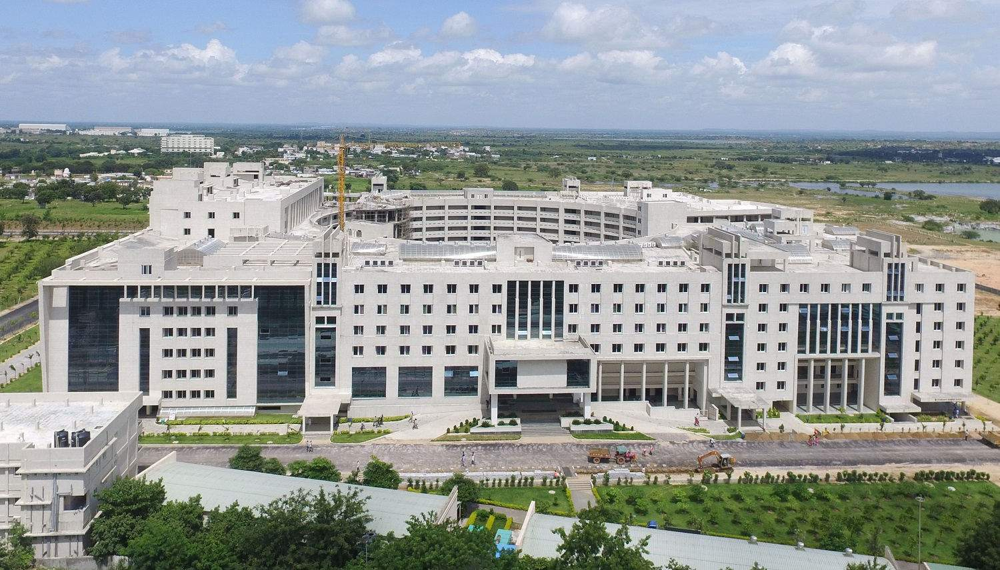
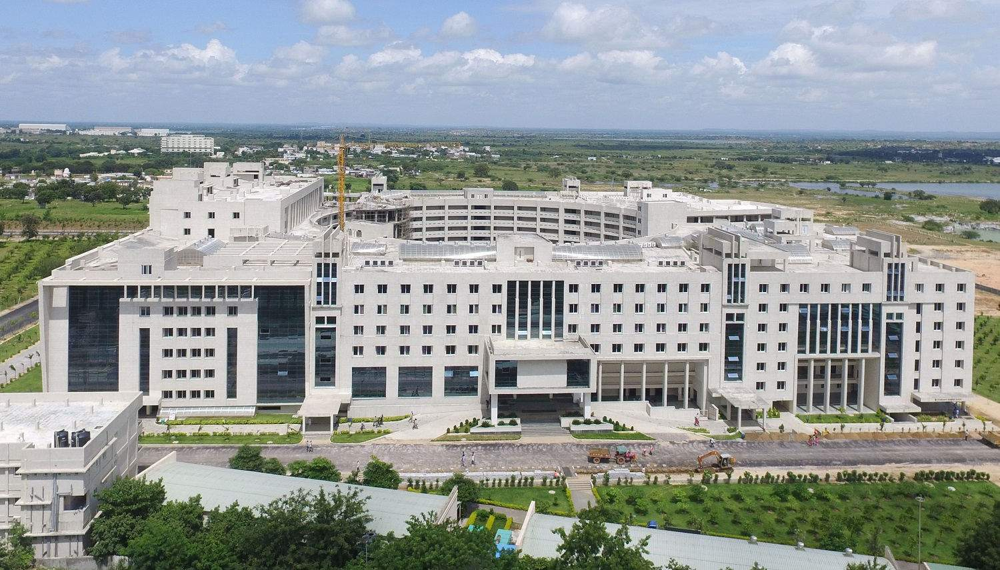

Gandhi Institute of Technology and Management, popularly known as GITAM, was founded in 1980 by an inspired group of eminent intellectuals and industrialists
of Andhra Pradesh led by Dr. M. V. V. S. Murthi,former Member of Parliament and popular philanthropist.
The vision of MAHATMA, the Father of the Nation was to see India as a socially and economically resurgent country and he looked upon education as an important means to achieve this goal.
Gandhiji’s view of education was not narrow or sectarian. He envisaged universities as institutions of higher learning that transcend all linguistic, racial and other barriers.
GITAM is committed to imbibe his values and abide by his philosophy.
GITAM has entered into different tie-ups and collaborations with prestigious
industries like: IBM, Virtusa, Hitachi Solutions, DXC, Cisco, Berkadia, etc.
Quality policy:
To achieve global standards and excellence in teaching, research, and consultancy by creating an environment in which the faculty and students
share a passion for creating, sharing and applying knowledge to continuously improve the quality of education.
Mission:
To impart futuristic and comprehensive education of global standards with a high sense of
discipline and social relevance in a serene and invigorating environment.

 
